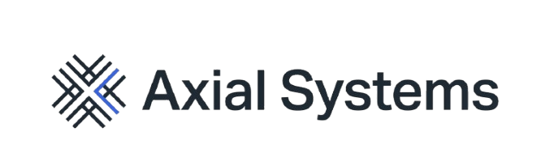

Give the work structure
Break a goal into priorities and milestones that can be understood and acted on.



AXIAL SYSTEMS / PRODUCT ENGINEERING LAB
Axial Systems explores the structure behind useful digital products: clear tasks, dependable workflows, and infrastructure built to support the work.
SYSTEMS IN DEVELOPMENT
THE WORK, MADE TANGIBLE
A growing set of systems for planning work, keeping knowledge, and connecting the steps in between.
CURRENT FOCUS
A structured task engine for priorities, milestones, and a clearer view of what comes next.
PLANNED
An offline-first home for notes and ideas, designed around private storage and useful retrieval.
PLANNED
A lightweight way to map task dependencies and make a process easier to follow.
When tasks, notes, and workflows live in separate places, the shape of the work gets harder to see. Axial starts with that everyday problem.
Structure turns a large goal into tasks, milestones, and decisions people can act on. That clarity is the foundation for the systems Axial is exploring.
Axial’s work begins with practical building blocks: task planning, knowledge that stays available, and workflows whose dependencies are visible.
Axial Systems is an independent product engineering lab. Its focus is a connected body of tools and infrastructure, developed with clarity and real-world use in mind.
HOW THE PIECES FIT
Break a goal into priorities and milestones that can be understood and acted on.
Make the notes and decisions around a project easier to keep and find.
Show how one step leads to another, so progress is easier to navigate.